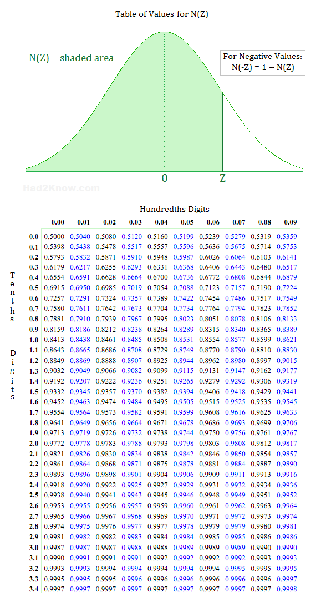

- Home |
- Statistics and probability |
- Normal distribution |
- Step 1 |
- Step 2 |
- Step 3 |
- Step 4
- Step 4 of 4
Step 4 - Standard Normal
General information
In order to calculate a cumulative probability distribution of the normal distribution one must integrate over the density function. Calculating the this is both time consuming and complex. To overcome this problem, a simple algebraic transformation is used. By transforming the normal distribution into a standard normal (called standardizing), the cumulative probability distribution of can be looked up in a predefined table.To standardize the normal distribution:
Z = (X-mu)/sigma
Heres an example on how to use it:
Normal:
P[X < x] = Y
Standard normal:
P[ Z < z] = P[Z < (x-mu)/sigma]
If you read the formula carefully, you can picture what it does, it is actually not that complicated.
- Let us begin with looking at X - mu. This shifts the graph in the x axis so it is centered around 0 instead of mu.
- Secondly we divide with sigma, this scales the x values. Now all x values in the graph is in the unit sigma instead. This means whatever value that is 1 sigma away from the expectation is now valued 1 in the graph, and 2 sigma - 2, 3 sigma - 3 and so on.
Our distribution is now standardized. It does not matter anymore what our expectation or standard deviation is, to find the cumulative distribution from -∞ to z, we just have to look up z in the table to the right.
This experiment
This experiment
In order to calculate cumulative probability distributions, we must standardize our normal distribution. Use the formula above to do that.
[Input]
Experiments and observations
- What is P[Z < 180.23]?
- What is P[130 < Z < 150]?
- What is P[Z > 165.54]?
